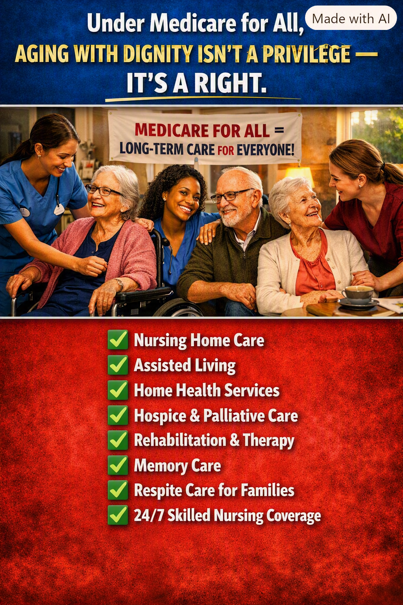

Article 37: Aging With Dignity Is a Right, Not a Privilege
Long-term care and the right to age with dignity

Download illustrated Word document (.docx)
MEDICARE FOR ALL • ARTICLE 37
Why universal healthcare must include long-term services and support for older adults, people with disabilities, and their families.
Illustration supplied for Article 37. The benefits shown represent a policy vision, not benefits already guaranteed under current Medicare law.
A promise that should last a lifetime
Growing older should not mean surrendering independence, dignity, or financial security. Yet across the United States, families confront an agonizing choice: how to provide safe, compassionate long-term care without exhausting a lifetime of savings. A humane healthcare system should respond to changing needs throughout life—not abandon people when care becomes more intensive.
Medicare for All offers an opportunity to change that. The goal should be a universal system in which medically necessary care and long-term services are based on need, not on the size of a bank account, the generosity of an employer, or the ability of relatives to provide unpaid care.
The gap in Medicare today
Traditional Medicare covers many hospital, physician, hospice, and certain skilled nursing and home health services under defined conditions. But it generally does not pay for ongoing custodial care—help with bathing, dressing, eating, and other everyday activities—when that is the only care needed. Nor does it generally pay for long-term residence in an assisted-living facility or nursing home. Medicaid may help eligible people obtain long-term services, but eligibility, available programs, and access vary by state.
That distinction matters. A person may have Medicare and still face substantial long-term care costs. Families may spend down savings, leave jobs, or shoulder caregiving responsibilities beyond their capacity. The system often treats these burdens as private problems, even though aging and disability are shared human realities.
What comprehensive long-term care should include
Care at home: Personal assistance, home health services, accessibility supports, and help with daily activities so people can remain at home when safe and appropriate.
Residential and nursing care: Appropriate skilled nursing, memory care, and other residential supports for people whose needs cannot be met safely at home.
Rehabilitation and recovery: Physical, occupational, and speech therapy when medically appropriate, including support after hospitalization.
Hospice and palliative care: Comfort, symptom relief, and support for patients and families facing serious illness.
Family caregiver support: Training, counseling, and respite services to prevent burnout and protect family stability.
Disability-inclusive services: Long-term supports for people of all ages—not only older adults—designed around autonomy and community participation.
A right to care does not mean one setting fits everyone
Good long-term care policy should favor individual choice, quality, safety, and the least restrictive appropriate setting. Some people need round-the-clock skilled nursing; others need a few hours of assistance each day. Some need dementia-specific services, while others need modifications to remain in their homes. A comprehensive system must respect these differences rather than impose a single institutional solution.
How to pay for the promise
Universal coverage would shift many costs now paid privately, by families, or through state programs into a coordinated public financing system. That is not the same as making care free to provide. A workable proposal must specify funding, caregiver wages, staffing standards, provider reimbursement, quality oversight, and how housing and room-and-board expenses are treated. Savings from reduced administrative complexity may help, but cannot by themselves be assumed to cover every expanded benefit.
The legislation must match the promise
Some Medicare for All proposals include long-term services and supports, but the exact scope matters. Nursing home services, home- and community-based assistance, assisted living, memory care, and respite care may be treated differently in legislation. Coverage of an assisted-living service does not automatically mean that rent, meals, or room and board are paid. We should insist on clear language, not slogans, before promising that every expense is covered.
The measure of a civilized society
We spend decades contributing to our families, workplaces, neighborhoods, and country. When age, illness, or disability changes what we can do on our own, our worth does not diminish. Neither should our claim to compassion and competent care.
Medicare for All should be designed to make that principle real: dependable long-term support, meaningful choice, and freedom from catastrophic care bills. Aging with dignity should not depend on being wealthy. It should be a promise we make to one another.
There is no them, only us.
Share This Article
Help others explore the ideas and evidence behind Medicare for All.
When posting on Facebook, paste these hashtags into your post text. Sharing services may not automatically include them.